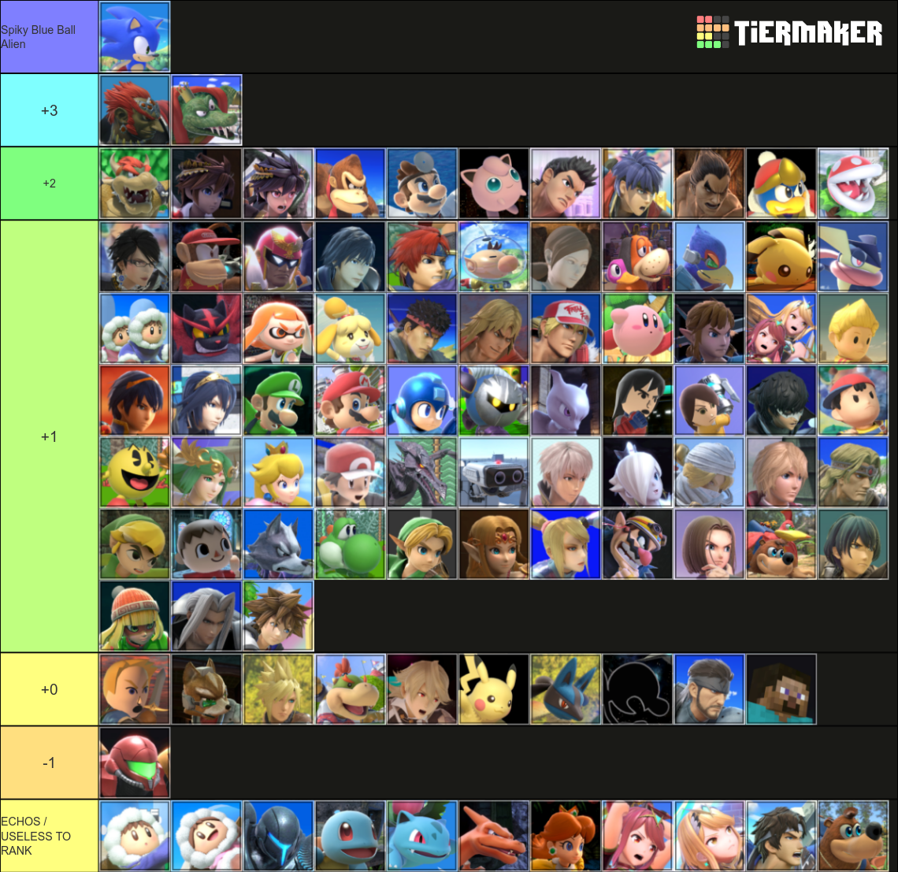
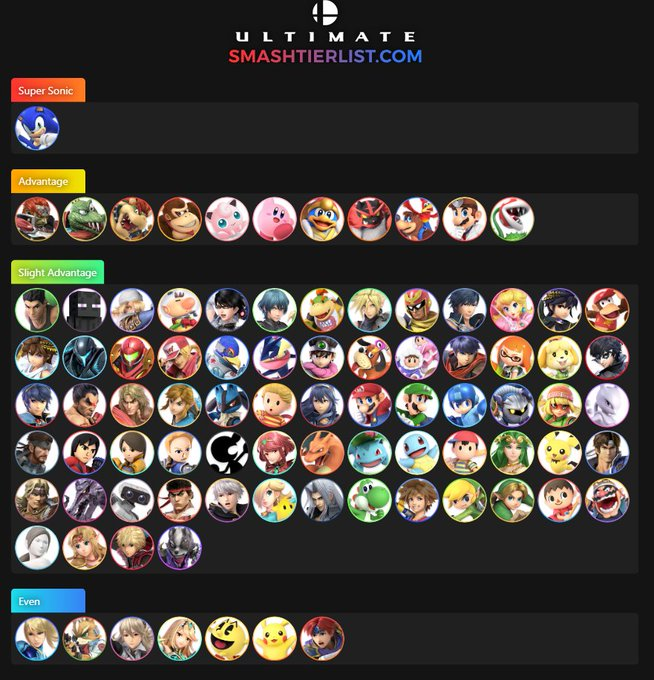
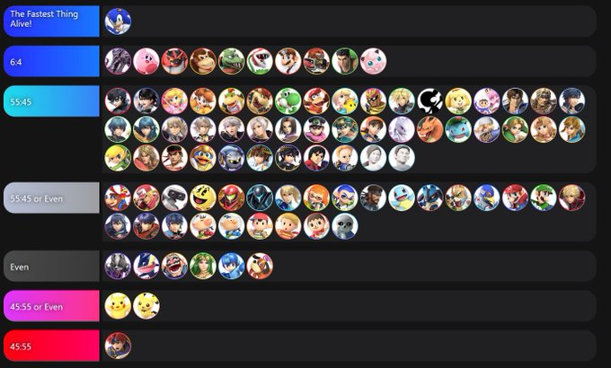

Your browser does not support the video element.
Home
What Is Smash Bros.?
My Smash Ultimate Mains
About King K. Rool
Matchup Charts: King K. Rool
About Sonic
The Competitive Scene
Recommended Equipment
Fun Facts About Smash Bros.
Sonic is a character that has a lot of winning matchups. In fact, he has an advantage against almost the entire cast. This makes him a very rewarding character at top level play, even if his playstyle is often quite lame. He also isn't too overly difficult to pick up at first either, so Sonic can be a really great character for anyone to pick up, as long as you don't mind throwing your morals in the trash and having your friends hate you in the process.
Below are matchup charts from me (RIBOIMAN), the best Sonic player in the world (Sonix), and the 3rd best Sonic player in the world (Wrath). Generally, you would want to reference a top player's matchup chart over some random person's such as mine, especially if you are interested in counterpicking or want to practice bad matchups.
Mine (Left), Sonix's (Middle), and Wrath's (Right) Sonic Matchup Charts
RIBOIMAN
Sonix
Wrath



Home
What Is Smash Bros.?
My Smash Ultimate Mains
About King K. Rool
Matchup Charts: King K. Rool
About Sonic
The Competitive Scene
Recommended Equipment
Fun Facts About Smash Bros.